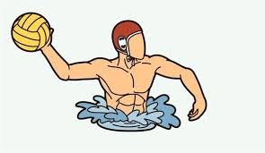

Giocatori

Alessandro
Portiere agile e determinato, un vero e proprio muro in porta.

Davide
Attaccante dalla forza surreale, specialista nei tiri da 6 metri.
Leonardo
Centroboa resistente e dominante nelle mischie.
Nicolò
Maestro nei tiri di precisione, capace di segnare anche da posizioni impossibili.
Daniele
Velocista instancabile, sempre pronto al contropiede e ai recuperi in difesa.
Christian
Attaccante incrollabile, capace di mantenere la calma anche nei momenti più critici.
Stefano
Motivatore del gruppo, punto di riferimento in acqua e fuori.
Alessio
Il capitano della squadra, assieme a Roberto crea una difesa solida e inespugnabile.
Fabio
Stratega inimitabile, regista delle azioni offensive più spettacolari.
Roberto
Difensore coriaceo, sempre pronto al sacrificio per la squadra.